Ngulube Hub
A self-hosted business client database + AI-solution matching system. The manual your team actually reads.
1. What is Ngulube Hub?
Ngulube Hub is a self-hosted CRM built for one specific job: helping you manage a small, high-value network of business contacts and turn them into clients.
It's not Salesforce. It's not HubSpot. It's the tool you actually open on the morning of a client call.
What it does well
- Stores your network with rich context: bio, sector, focus areas, pain points, AI-solution matches
- Generates personalised intro briefs for each contact
- Tracks your pipeline from first contact to closed deal
- Briefs you before a call using AI synthesis of everything you know about the contact
- Manages your projects and tasks alongside your contacts (so a deal and the work behind it live together)
- Surfaces what to do today — overdue follow-ups, scheduled calls, stale deals
What's deliberately NOT here
- Multi-tenancy, billing, team chat
- Lead capture forms, drip campaigns, marketing automation
- Social-media listening, lead scoring
- Mobile native app (the web UI is mobile-friendly)
2. Getting started
First-time setup
The first time anyone visits the app, they land on a setup screen. The first user created is a super-admin — they can do everything, including creating other admins.
After the super-admin is created, every other user must be added by an admin (see §17).
Login
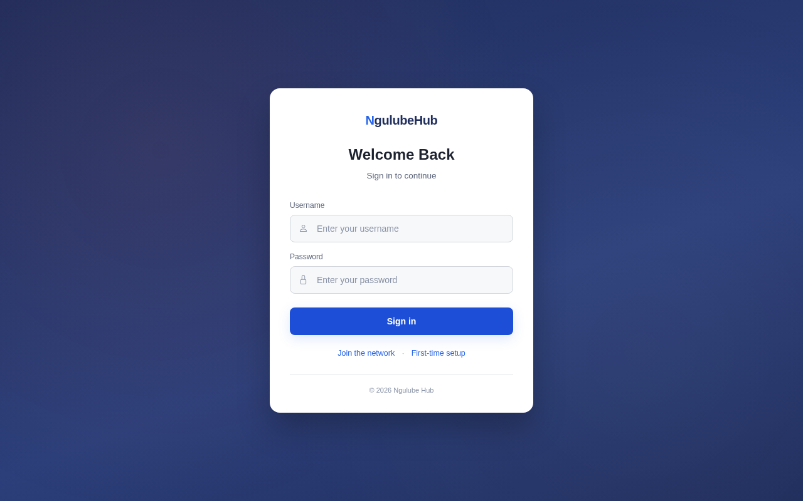
Enter your username and password and click Sign in.
The layout (after login)
- Left sidebar: workspace sections. Click the « arrow to collapse.
- Top bar: greeting, search trigger (Cmd+K), quick-add client, import, join form link.
- Main content: the page you're on.
Keyboard shortcuts
| Keys | Action |
|---|---|
| Ctrl+K / Cmd+K | Open global search palette |
| Esc | Close any modal or palette |
| ↑ ↓ | Navigate search results |
| Enter | Open selected result |
| n (in palette) | Go to "Add new client" |
3. The dashboard
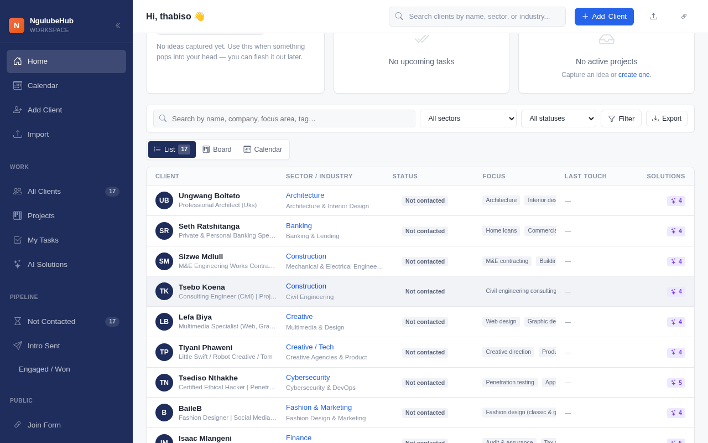
The dashboard (/) is your home base. From the top down:
- Page header — breadcrumb (Home > All Clients), bold title "Business Clients", subtitle with total count
- Stats cards (first row of 4): Total Clients, Not Yet Contacted, In Motion, Pending Review
- Project + Task stats (second row of 4): Active Projects, Overdue Tasks, In Scoping, Closed (Won)
- Today widget — see §10
- Idea Inbox / My Upcoming Tasks / Active Work — three-up grid
- Search + filter toolbar — quick search by name, sector, or industry
- View switcher —
List [N] | Board | Calendartabs - Compact client list — see §4
Switching views
Click the List / Board / Calendar tabs to switch how clients are displayed:
- List — dense, scannable, with all info per row
- Board — kanban with drag-and-drop between status columns
- Calendar — month grid with tasks and touch events
4. Clients: the core data model
A "client" in Ngulube Hub is any business contact you're tracking. It's not just a name and email — it carries the full context of who they are and how you can help them.
Fields
| Field | What it is |
|---|---|
| Name | Required. Full name. |
| Title / role | Job title (e.g. "Financial Planner"). |
| Company | Where they work. |
| Website | Their site, if any. |
| Sector | High-level bucket (Finance, Healthcare, IT, etc.). |
| Industry | More specific (Financial Advisory, Banking, etc.). |
| Sub-industry | Niche (Personal Financial Planning). |
| Region | Default "South Africa". |
| Source | How you met (Direct add, Public form, Referral). |
| Bio | Free text — what they do, who they serve. |
| Focus areas | Multi-line. One topic per line. |
| Pain points | Multi-line. Their problems, in their words. |
| Tags | Comma-separated labels for filtering. |
| Contact email | Used by the share-via-email button. |
| Contact phone | Used by the share-via-WhatsApp button. |
| Status | Pipeline stage (see below). |
| Notes | Private, internal — never shown to the client. |
| AI solutions | Auto-matched from the catalog based on sector/industry. |
Pipeline statuses
A client moves through these stages. Drag-and-drop on the board view, or change manually via the edit form.
- Not contacted — default for new clients
- Pending review — set when someone fills in the public join form (you approve or discard)
- Intro sent — you've sent the personalised intro brief
- Engaged — they're in active conversation
- Won — closed deal
- Lost — explicitly lost (with optional reason)
- On hold — paused for now
Status visualisation
Status appears as a coloured pill throughout the app:
- Gray = not contacted
- Yellow = pending
- Blue = intro sent
- Green = engaged or won
- Red = lost
The compact list view
The list view shows one row per client with the most relevant info at a glance:
- Avatar (initials)
- Name + role
- Sector / Industry
- Status pill (with coloured dot)
- Focus tags (up to 2, then "+N")
- Last touch date
- Solution count (purple pill if matched)
Hover any row to reveal the action icons (view, intro, edit).
5. Adding and editing clients
Adding a new client
Click + Add Client in the top bar (or Ctrl+K → type a name → press n).
The form has these sections:
- Identity — name, title, company, website
- Classification — sector, industry, sub-industry, region, source, intro status
- Profile — bio, focus areas (one per line), pain points, tags (comma-separated)
- Contact — email, phone
- Outreach cadence — last contacted date, touch cadence
- Next step & follow-up — explicit next step + date
- Outcome (only if status is Won or Lost) — won value in ZAR or lost reason
- Notes (private, internal)
Click Create Client to save. You're redirected to the new client's profile.
Editing a client
From a client profile, click the pencil icon in the top right. Same form, pre-filled. Save with Save Changes.
AI solution matching
When you save a client with a sector/industry set, the app auto-matches AI solutions from the catalog (/catalog). You can see these on the client profile's right column.
To re-trigger matching, edit the client and save — it will recompute.
6. The intro brief
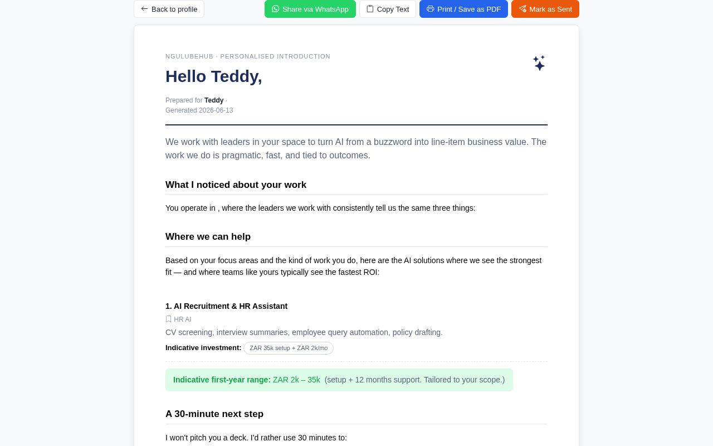
The intro brief is the most distinctive feature. Click Generate Intro on any client to generate a personalised 1-page document that explains:
- What you noticed about their work
- Where you can help (specific AI solutions, with estimated investment)
- A clear 30-minute next step
It's the document you'd send to a prospect to introduce yourself and your services. It reads as if you wrote it personally — because the AI is filling in the structure using their bio, their pain points, and your matched solutions.
The brief is rendered as a clean printable page. From the top action bar:
- Back to profile
- Share via WhatsApp (green) — only shown if the client has a phone
- Share via Email (blue) — uses mailto: with the full intro body
- Copy Text — copies the full intro to clipboard
- Print / Save as PDF — uses browser print
- Mark as Sent — logs the intro as sent and updates
last_contact_at
7. Sharing: WhatsApp & Email
If a client has a phone number, the Share via WhatsApp button opens https://wa.me/{phone}?text={intro body} in a new tab. The phone is auto-formatted (South African numbers get +27 prefix).
The Share via Email button works for any client (no phone needed). It opens your default mail client with:
- To: the client's email (if set; otherwise the field is empty for you to fill in)
- Subject: "Intro for {Name}"
- Body: the full intro brief, pre-formatted
Copy Text
Use the Copy Text button to copy the intro body to your clipboard, then paste anywhere — Slack DM, LinkedIn message, Notion doc.
8. The board (kanban)
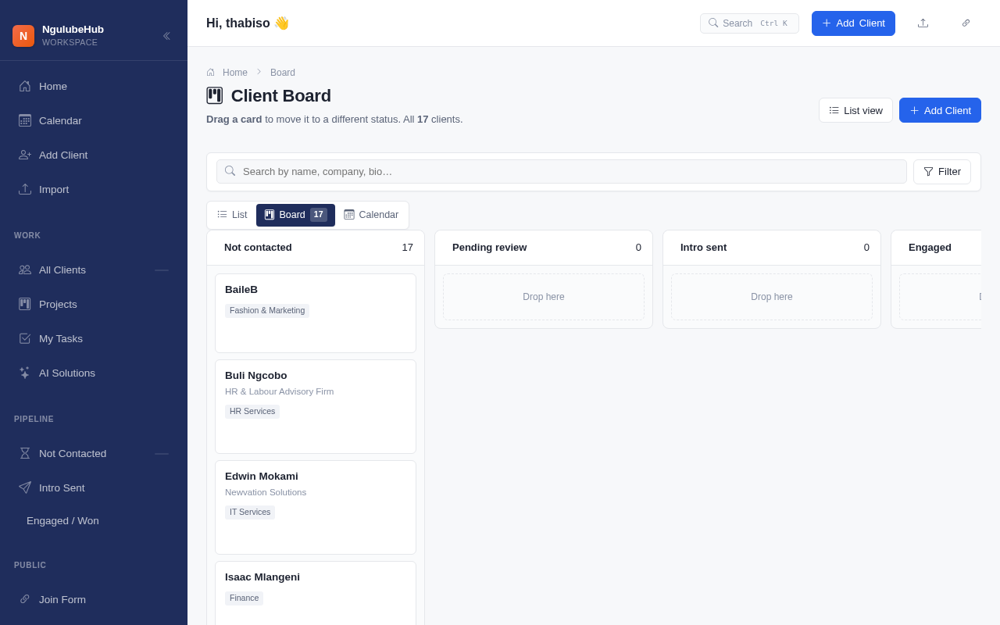
The board (/board) shows all clients as cards in columns by status. Drag a card to a different column to change its status.
What happens when you drag
- The card moves to the new column immediately (optimistic UI)
- The status change is saved to the database via
POST /clients/:id/status - An interaction is logged: "Status changed: X → Y"
- If the new status is "Engaged", "Won", or "Intro sent", the
last_contact_atis updated to today - A toast confirms the move: "Moved to {status}"
"Drop here" placeholders
Empty columns show a dashed "Drop here" zone.
Hover actions
Hover any card to see the action icons (view, intro, edit).
Filtering
The search bar at the top filters by name, company, or bio. Use it to focus on a subset.
9. The calendar
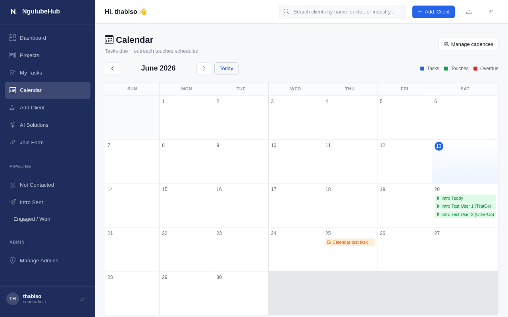
The calendar (/calendar) shows your scheduled work in a month view.
Event types
- Blue (Tasks) — tasks from your projects with due dates
- Green (Touches) — outreach follow-ups for clients with cadence set
- Red (Overdue) — overdue tasks or touches past their date
Navigation
- ← / → — previous / next month
- Today — jump back to the current month
- The
m=query parameter lets you link directly to a specific month (e.g./calendar?m=2026-07)
Upcoming Touches panel
The right side of the calendar shows the top 5 by next due, with day countdowns ("in 3d", "Today", "2d overdue").
Manage cadences
Click Manage cadences in the top right to jump to the client list filtered to people with cadence set.
10. The Today widget
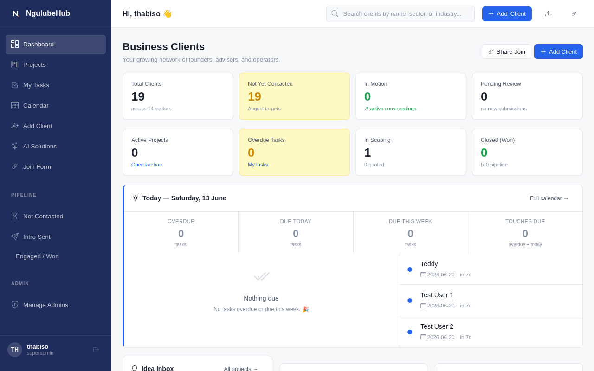
The Today widget sits at the top of the dashboard. It shows:
- Overdue tasks (count + list, red if > 0)
- Due today tasks (count + list, yellow if > 0)
- Due this week tasks (count + list)
- Touches due — outreach follow-ups overdue or due today
If a list is empty, the widget shows "Nothing due / No touches set."
This is your "what should I focus on today" surface. It pulls from:
- Tasks with
due_date(across all your projects) - Clients with
next_followup_atandcadence_daysset - Last-touch + cadence math (next touch = last + cadence days)
11. Meeting Prep (AI)
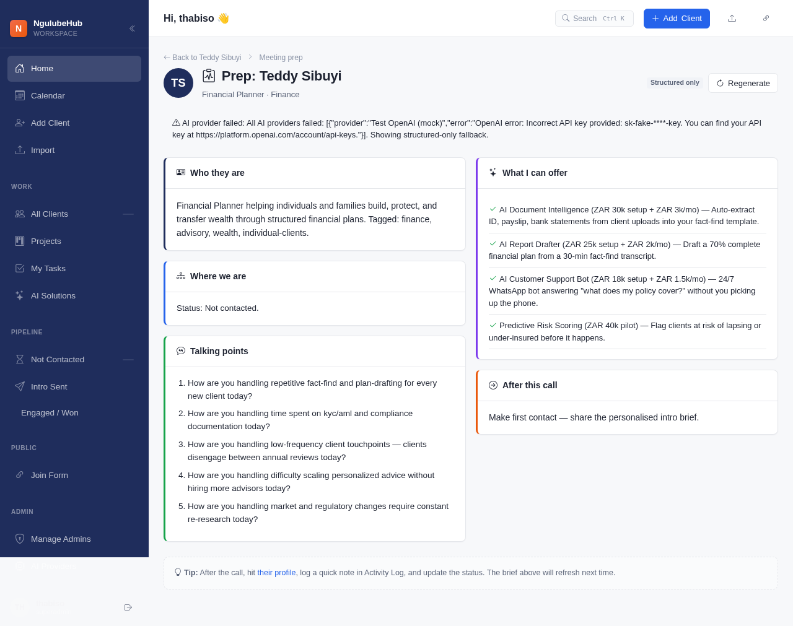
What the prep page contains
- Who they are — synthesised from bio + sector + tags
- Where we are — pipeline state summary (status, last contact, next step, cadence)
- Talking points — 3-5 questions generated from their pain points
- What I can offer — 2-4 AI solutions + why each fits them, with indicative pricing
- After this call — suggested next step (auto-generated based on status)
- Open threads — unresolved tasks
- Recent activity — last 5 interactions
Two modes
Structured-only (no AI provider configured)
The prep page assembles the brief from your data alone. No API call. No cost. Already useful.
AI-enhanced (provider configured)
The configured provider is sent a context-rich prompt and returns a 1-paragraph synthesis for "Who they are" plus refined talking points and offer. The result is cached in ai_prep_cache for the session — hit Regenerate to force a fresh synthesis.
Graceful fallback
If the AI call fails (network error, bad key, rate limit), the page shows the structured-only brief with a yellow banner explaining the failure. You never lose the page.
Setting up an AI provider
See §18.
When to use Prep
- 5-10 minutes before any client call or meeting
- Before replying to a long-overdue thread
- When you're about to send a proposal and need to remember the context
- When you're trying to remember "who is this person" in a meeting
12. Logging activity
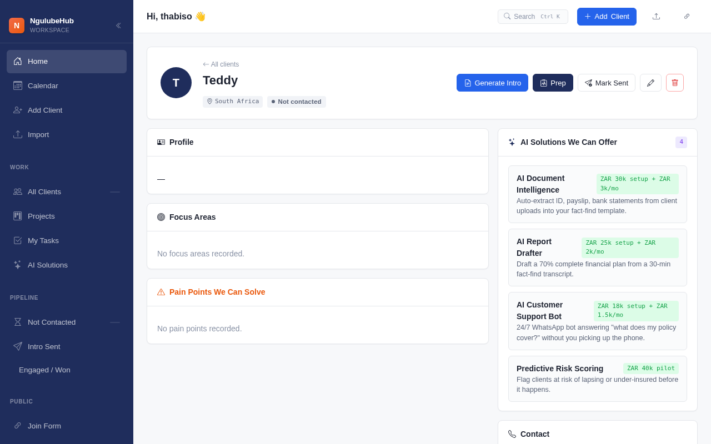
Every interaction with a client is logged in the Activity Log panel on the right of their profile.
Adding a log entry
- Pick the type: Note, Call, Email, WhatsApp, Meeting
- Optionally pick a new status — if you change it here, the client moves to that pipeline stage (and a status-change interaction is auto-logged)
- Type a short summary (one or two lines)
- Click Log Activity
What's auto-logged
- When you Mark intro as sent — interaction type "status" with summary "Status changed: X → Y"
- When you drag a card on the board — same auto-log
- When you edit a client — no log (only manual)
Reading the log
Interactions are listed newest-first. Each shows timestamp, type, and summary.
13. Pipeline data: cadence, next step, outcome
These three "operational" fields turn a contact database into a working pipeline.
Cadence (cadence_days + last_contact_at)
Set a touch cadence (every 3, 7, 14, 21, 30, 60, or 90 days). When set:
- The client appears on the Calendar with their next touch date
- The Today widget surfaces them when overdue
last_contact_atis auto-updated when you mark intro sent or log a touch
Next step + follow-up date (next_step + next_followup_at)
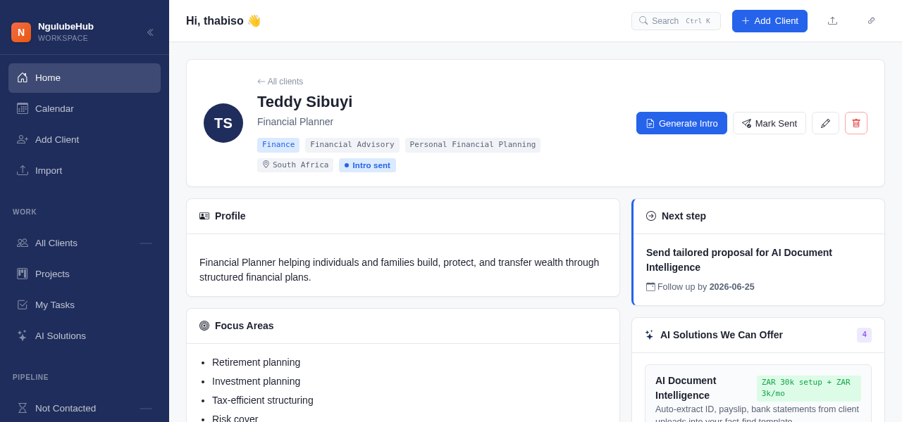
The most useful two fields in the app. Every client should have:
- A next step — one specific thing you'll do next (e.g. "Send tailored proposal", "Book 30-min call")
- A follow-up date — when you'll do it
These appear on the client's profile in a blue-bordered panel at the top of the right column.
Outcome (won_value_zar + lost_reason)
When a client moves to Won or Lost, the edit form shows the Outcome section:
- Won value (R) — the deal value in ZAR
- Lost reason — pick from: Price, Timing, No fit, Ghosted, Went with competitor, Other
The profile shows a green "Won · R 350,000" pill or a red "Lost: Price" pill.
These fields power future pipeline reporting (YTD won, conversion rates, lost-reason breakdown).
14. File attachments
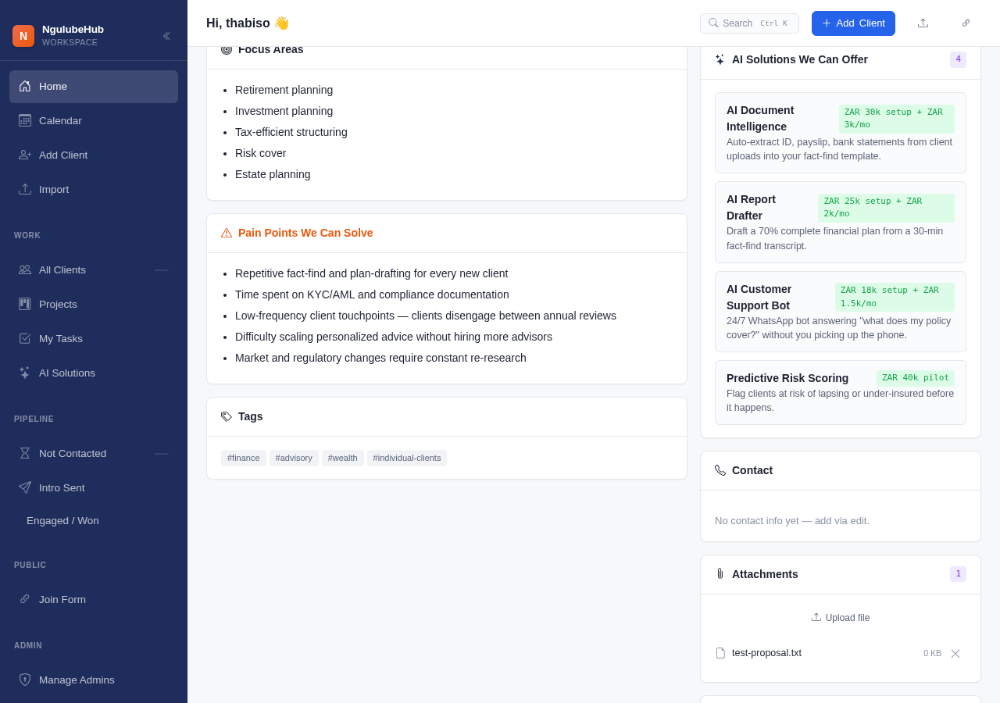
Each client can have files attached: proposals, contracts, photos of business cards, PDFs.
Uploading
- On a client profile, scroll to the Attachments panel
- Click Upload file
- Pick a file (max 10 MB)
- The file is saved to
data/attachments/{client_id}/{timestamp}_{name} - The metadata (filename, mime type, size, upload date) goes into the
attachmentstable
Downloading
Click any filename in the attachments list. The file downloads with the original filename (Content-Disposition header preserves it).
Deleting
Click the × next to any file. You'll be asked to confirm.
Storage
- Files live on disk at
data/attachments/ - Database references them by path
- Deleting a client cascades —
ON DELETE CASCADEcleans up the file metadata. Files on disk need manual cleanup (we don't auto-delete on cascade, intentionally — backup first).
Limits
- Max 10 MB per file (configurable in
server.js) - No file-type restrictions (don't upload executables in a shared environment)
15. Global search (Cmd+K)
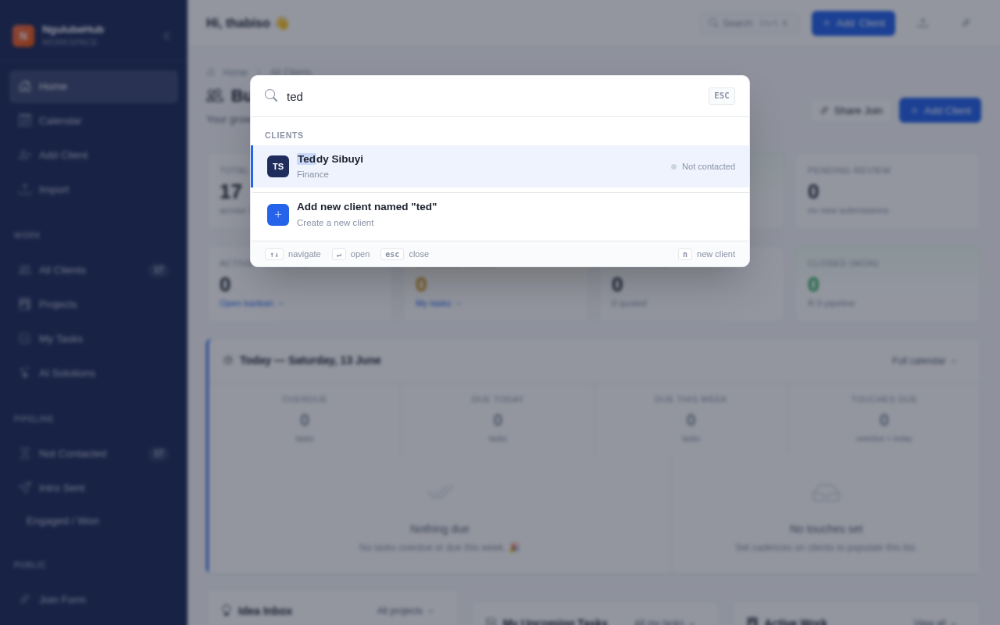
Press Ctrl+K (Windows/Linux) or Cmd+K (Mac) anywhere to open the global search palette.
What it searches
- Clients — by name, company, bio, sector, industry, tags
- Projects — by name, description
- Tasks — by title
How to use
- Ctrl+K opens the palette
- Type a query — results update as you type (80ms debounce)
- ↑ / ↓ to move through results
- Enter to open the selected one
- Esc to close
- n to jump to "Add new client" (creates a new client with the search term as a starting name)
The "Add new client" action
If your query is 2+ characters and no client exists with that name, you get a quick action at the bottom of the palette: "Add new client named '{query}'". Click it (or press n) to go to the new-client form pre-filled with that name.
Where it triggers
- Anywhere in the app, the keyboard shortcut works
- Click the Search button in the top bar to open it with a mouse
16. Project Management
Ngulube Hub has a built-in project + task tracker, so a deal and the work behind it live in the same place.
Projects
A project is a piece of work — usually tied to a client (a paid engagement, a proposal, a pilot).
Statuses: Concept → Scoping → Quoted → Active → (On hold) → Won | Lost
Click Projects in the sidebar to see the kanban. Each project card shows name, status pill, due date, and pipeline value.
Tasks
Tasks live under projects. They have:
- Title, description
- Status (todo / in_progress / blocked / done)
- Priority (low / normal / high / urgent)
- Due date
- Estimated hours / actual hours
- Blocked reason (if blocked)
- Comments thread
My Tasks
Click My Tasks to see everything assigned to you, across all projects, sorted by due date.
Idea Inbox
A quick-capture form on the dashboard for fleeting ideas. Type one line, hit Capture. The idea becomes a project in Concept status. Flesh it out later.
Best practice
Use the link between client and project: when you create a project, set its client_id to the related client. The project's status changes will mirror to the client's interactions timeline automatically.
17. Admin: managing users
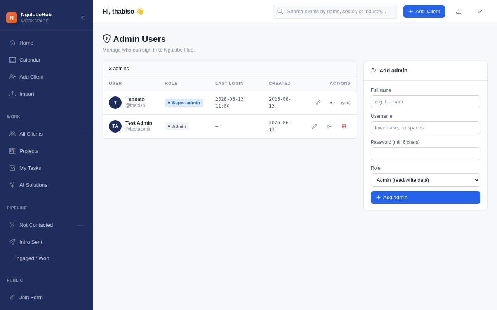
Only super-admins can access /admin/users. Regular admins can use the app but can't manage other users.
Adding a user
- Click Admin → Manage Admins in the sidebar
- Fill in: Full name, Username, Password (min 6 chars), Role
- Click Add admin
Editing a user
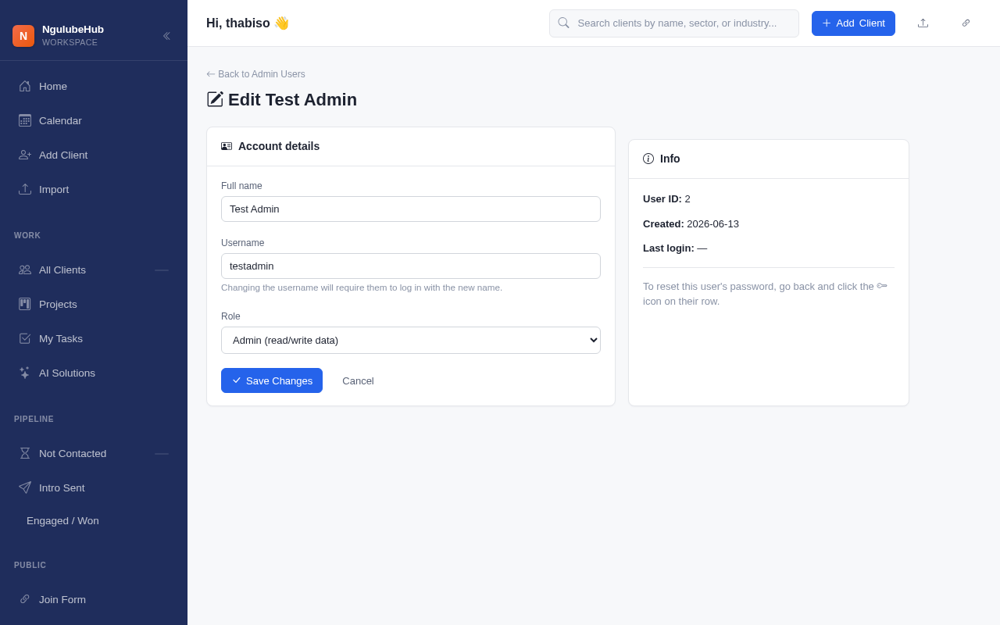
- Click the pencil icon on any user row
- Change name, username, or role
- Click Save Changes
- (Password is changed via the key icon — see below)
Resetting a password
- Click the key icon on any user row
- Enter the new password (min 6 chars)
- Click Update password
Deleting a user
- Click the trash icon on any user row
- Confirm
Roles
- Admin — read/write data (clients, projects, tasks, log activity)
- Super-admin — everything an admin can do, plus manage other admins and AI providers
The default super-admin
The first user created during setup is automatically a super-admin. They can promote others.
18. Admin: AI providers
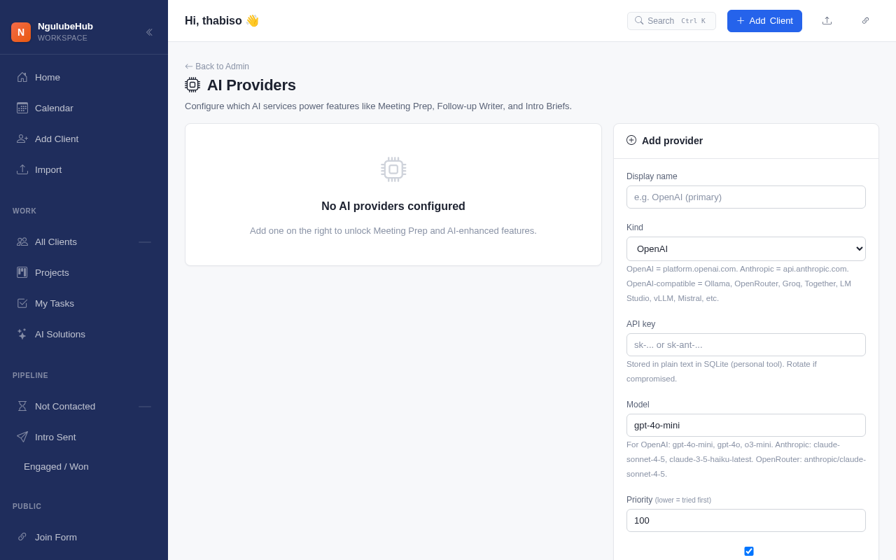
Ngulube Hub is provider-agnostic for AI features. You can configure one or more providers; the system uses the default and falls back through the priority chain.
Supported providers
| Kind | Use for | Notes |
|---|---|---|
| OpenAI | gpt-4o-mini, gpt-4o, o3-mini | Cheapest, very good for short prompts |
| Anthropic | claude-sonnet-4-5, claude-3-5-haiku | Excellent for synthesis, safety-first |
| OpenAI-compatible | Ollama, OpenRouter, Groq, Together, LM Studio, vLLM, Mistral | Anything that mimics OpenAI's API |
Adding a provider
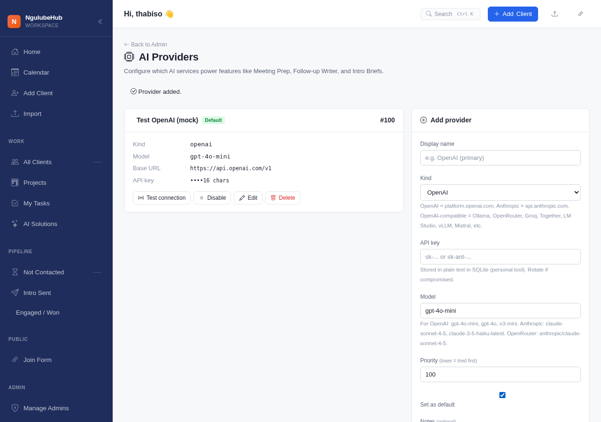
- Click Admin → AI Providers in the sidebar
- In the Add provider panel on the right:
- Display name — e.g. "OpenAI (primary)"
- Kind — openai / anthropic / openai_compat
- API key — paste your key
- Base URL — only for openai_compat (Ollama default is
http://localhost:11434/v1) - Model — e.g.
gpt-4o-mini - Priority — lower number = tried first
- Set as default — checked by default
- Click Add provider
Testing a connection
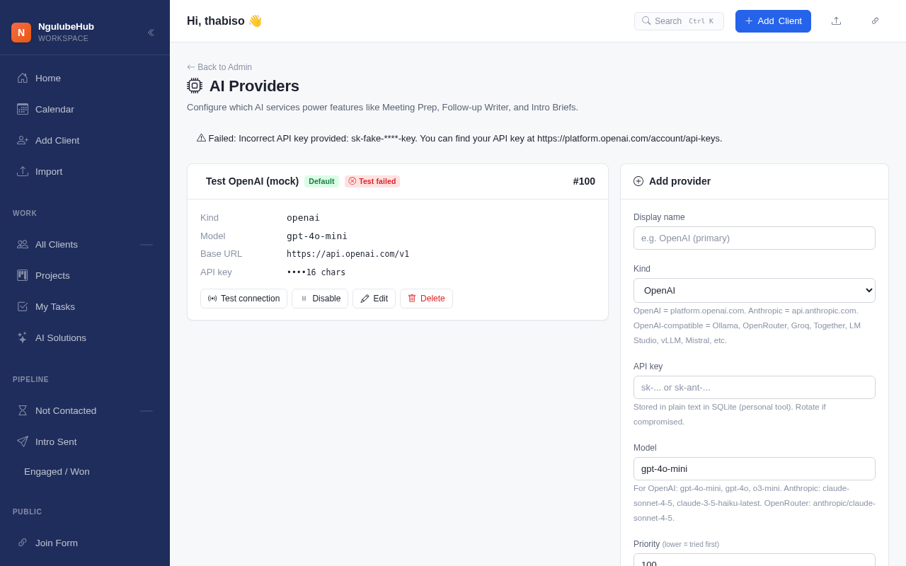
Click Test connection on any provider card. The system pings the API with a "ping" message and shows:
- Green Tested OK if it connects
- Red Test failed with the error message if it doesn't
Setting a default
Click Set as default to make a provider the primary. Only one default at a time.
Enabling / disabling
Click Disable to turn off a provider without deleting it. The system will skip disabled providers when looking for one to use.
Failover
When a feature (like Meeting Prep) needs AI, the system tries the default first. If that fails, it falls through the priority chain to other enabled providers. If all fail, the structured-only fallback runs.
Editing
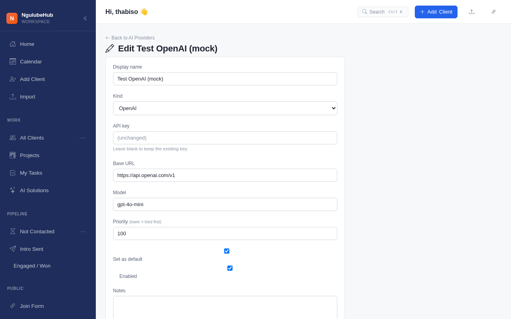
Click the pencil icon to edit. Leave the API key field blank to keep the existing key.
Deleting
Click the trash icon to delete. The default provider cannot be deleted — set another one as default first.
Recommended setup for solo operators
- One OpenAI provider with
gpt-4o-minias default. Cheapest, good enough for the prep prompt. - One Ollama provider as a backup if you want to run fully local. Set base URL to
http://localhost:11434/v1and model tollama3.1ormistral.
19. Public join form
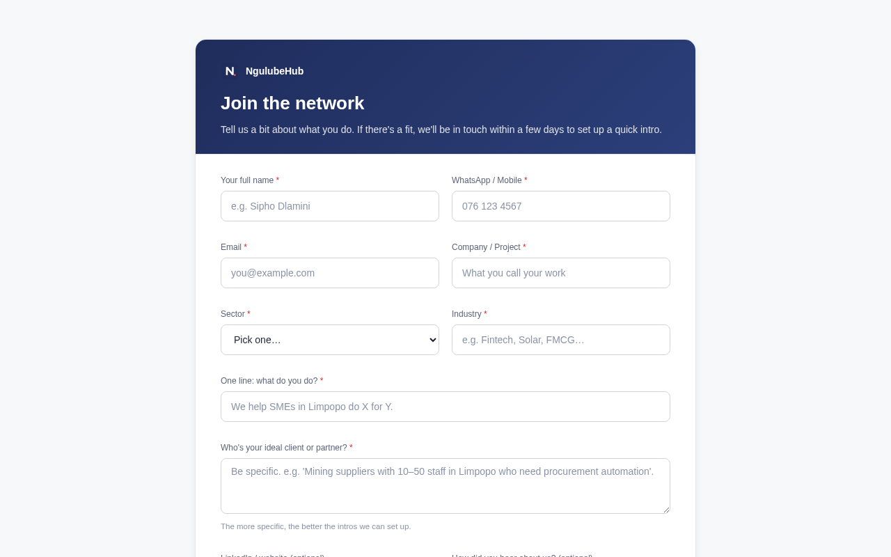
Ngulube Hub has a public-facing form at /join. Anyone can submit their details, and a new client row is created in Pending review status for you to approve or discard.
Use case
Share the link on LinkedIn, in your email signature, or via WhatsApp status. People who are interested in your services fill in the form; you get a structured lead instead of a random text.
What the join form collects
- Name, email, phone
- Company, website
- Sector, industry, sub-industry
- A "what do you do" text box
- A "what problems are you trying to solve" text box
The approval flow
New submissions land in your client list as Pending review. On a pending client profile you'll see a yellow banner with two buttons:
- Approve & Add to Pipeline — moves status to "Not contacted", client appears in your normal flow
- Discard — deletes the client
Where the form lives
/join— the form/join(after submit) — a thank-you screen
Linking to it
From the dashboard, click Share Join to copy the link. From any page, it's also in the top bar (link icon).
20. CSV bulk import
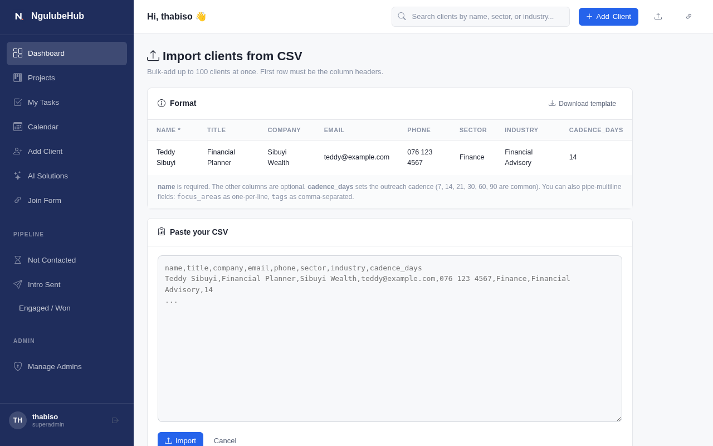
When you have a list of contacts to add in bulk — from an event, a spreadsheet, or another tool — use CSV import at /import.
How to use
- Click Import in the sidebar
- Download the template (link at the top right of the import page) to see the expected format
- Fill in your rows in any spreadsheet app, save as CSV
- Paste the CSV into the textarea
- Click Import
CSV format
The first row must be headers. Supported columns:
name, title, company, email, phone, sector, industry, cadence_daysnameis required- All other columns are optional
cadence_daysaccepts: 3, 7, 14, 21, 30, 60, 90- Multi-line fields (focus_areas, pain_points) use newlines
- Tags use comma-separated values
Limits
- Max 100 clients per import
- Errors on individual rows don't fail the whole import — they're reported in the result
What the result shows
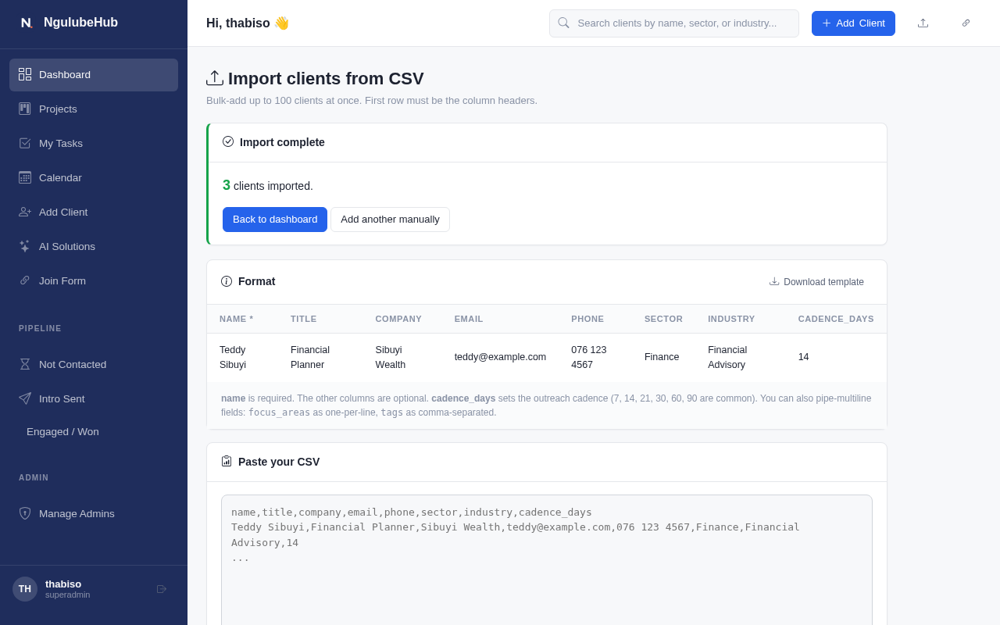
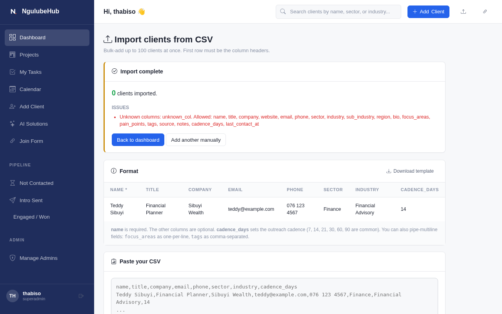
21. Best practices
Daily rhythm
- Morning: open the dashboard, scan the Today widget. What's the one thing to do first?
- Before any call: click Prep on the client. Read the brief. Set your anchor.
- After any interaction: open the client profile, log what happened, update the next step. This takes 30 seconds and compounds.
- End of day: check the Today widget again. Anything you missed moves to tomorrow.
Weekly rhythm
- Monday: review the Board. Any cards stuck in "Intro sent" for 14+ days? Follow up.
- Wednesday: review the Calendar. Any touches due? Any tasks slipping?
- Friday: review the Today widget. Any tasks overdue? Any clients with no next step?
Pipeline hygiene
- Every client should have a next step. If you can't think of one, they're effectively dead — either reach out or move them to "On hold".
- Update
last_contact_atreligiously. The cadence math depends on it. The app auto-updates on intro-sent and on touch logging — but if you call someone and don't log it, the system doesn't know. - Set a cadence for clients you want to stay in touch with. 14 days is a good default for warm leads. 30 days for "stay-in-touch" relationships.
- Use Won / Lost to track outcomes. When you mark a client as Won, capture the deal value. When Lost, capture the reason. This is the data you'll need to know your real close rate.
Naming conventions
- Name field: full name as the person writes it ("Thabiso Naleli", not "T. Naleli")
- Tags: lowercase, comma-separated, no spaces. e.g.
finance,advisory,wealth - Status field: use the standard labels. Don't invent new ones.
22. Troubleshooting & FAQ
I can't log in
- Confirm the URL (
https://ngulube.naleli.co.za) - Check your username (case-sensitive)
- Try the password reset flow — get a super-admin to reset it for you
I lost my password and there's only me
- SSH into the VPS
- Run:
cd ~/ngulubehub && node -e "require('./db/users').changePassword(1, 'new-password-here')" - Replace
1with your user ID (usually 1) and set a new password
The AI Prep page shows "Structured only"
Either:
- No AI provider is configured. Go to
/admin/providersand add one. - The configured provider failed. Check the yellow error banner for the reason. Click Test connection to verify.
A file upload failed
- Check file size: max 10 MB
- Try again — multipart uploads can fail on flaky networks
- The page will show a yellow error banner with the specific reason
Drag-and-drop on the board isn't working
- Make sure you're on
/board(not/dashboardor/pipeline/...) - On mobile, drag-and-drop is limited. Use the edit form or a status change via the Activity Log instead.
- The card needs to land fully inside a column. A drop on the column header doesn't count.
A client's status is wrong
Three options:
- Open the client, go to Activity Log, log a new entry with the correct status
- Open the client, click Edit, change the Status dropdown, Save
- On the Board view, drag the card to the correct column
The Calendar is empty
You need to set cadences on clients. Open each client, set a Touch cadence (e.g. "Every 2 weeks"). The Calendar populates with the next-touch dates.
Today's widget is empty
Either you have no tasks due this week (good!) or you have no clients with cadence set (set some). The widget tells you which.
I want to delete a client
Open their profile, click the trash icon in the top right, confirm. Cascades to interactions, attachments, and projects.
How do I back up my data?
- Database: the SQLite file is at
data/ngulubehub.sqliteon the VPS. Copy it. - Attachments: the directory is at
data/attachments/. Copy it. - Automated: set up a cron job on the VPS to
cp data/ngulubehub.sqlite backups/$(date +%Y%m%d).sqlitedaily.
How do I deploy a new version?
ssh naleli@157.173.99.185 "cd ~/ngulubehub && git pull --ff-only origin main && ./deploy.sh"The deploy.sh script restarts the container with the latest code and runs any schema migrations automatically.
The deploy script needs new SSH keys
If GitHub rejects the deploy key:
- Generate a new key on the VPS:
ssh-keygen -t ed25519 -f /root/.ssh/ngulube-deploy -N '' - Copy the public key (
cat /root/.ssh/ngulube-deploy.pub) - Add it at https://github.com/settings/keys with title
ngulube-deploy-{date} - Delete the old key first if it still works for some reason — confusion is the enemy.
23. Glossary
| Brief | The personalised intro document for a client. Generated by AI from their data + your solutions. See §6. |
|---|---|
| Cadence | The recurring touch interval for a client (e.g. every 14 days). Drives the Calendar and Today widget. |
| CLI | Command-line interface. |
| Cmd+K palette | The global search palette, opened with Ctrl/Cmd+K. |
| CRM | Customer relationship management. This is one. |
| Kanban | The Board view, where clients are cards arranged by status columns. |
| Lead | Same as "client" in this app. Any business contact you're tracking. |
| Pipeline | The sequence of statuses from Not contacted → Intro sent → Engaged → Won or Lost. |
| Prep | The AI-synthesised meeting brief. See §11. |
| PM | Project management. The Projects + Tasks module. |
| Provider | An AI service (OpenAI, Anthropic, Ollama, etc.) configured in the system. |
| Touch | A point of contact with a client (call, email, WhatsApp, etc.). |
| Won / Lost | Terminal pipeline states. Won captures deal value; Lost captures reason. |
This manual is version-controlled at docs/USER_MANUAL.md in the project repository. To update it, edit the markdown, push, and re-render docs/manual.html.
Ngulube Hub v1.0 · 2026-06-13